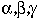
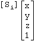
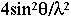
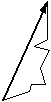
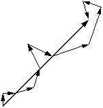
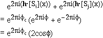
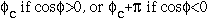
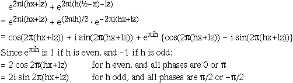
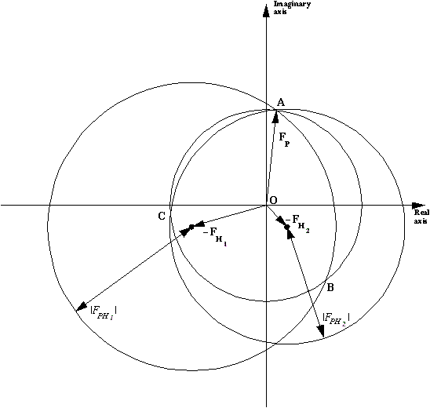

|
Basic Maths for Protein Crystallographers |
| Step title |


|
Crystal axes a, b, c; crystal angles
,
geometrically defined thus:

An atom in a crystal can be referenced as (xi ), or as a "coordinate triple xi,yi,zi", or in vector notation as xia+yib+zic. Its position in another unit cell is (xi+nx)a + (yi+ny)b + (zi+nz)c. The atom's position is given relative to some origin, which is conveniently chosen relative to the symmetry axes.
Diffraction from a crystal lattice is visible at discrete points conveniently indexed as an integer triple (h,k,l), or in vector notation as ha*+kb*+zc*, relative to the reciprocal lattice vectors a*,b*,c*. These are defined to have the properties
a*· a = b*· b = c*· c = 1 a*· b = a*· c = b*· c = 0
i.e. a* is perpendicular to b and
c, and therefore parallel
to b×c. E.g. in P31:

Since crystals are repeating lattices with straight edges, the only symmetry elements compatible with crystallinity are:
|
|
Symmetry-equivalent atoms are tabulated in the International Tables like this:
(x,y,z), (-y, x-y, z+1/3), (y-x, -x, z+2/3) (this is for spacegroup P31).
But it is useful to think of symmetry operators as 3x4 or 4x4 matrices and generate symmetry related
atoms thus. Then the symmetry-related coordinates in P31 are
,
i.e.
 .
.
If the [Si] is augmented to [S'i], a 4x4 matrix, by the addition of a fourth row,
[0 0 0 1], the augmented symmetry operators make a closed group, i.e.
for some i,j and k: [S'i][S'j]=[S'k]and
[S'i]-1=[S'k].
The length of the reciprocal lattice vector
ha*+kb*+lc*
is called d* and equals
 .
.
Crystallographers often define S as (d*)² or

Protein crystallographers talk about resolution in terms of 1/d* (or d), hence the 'high resolution'
limit is actually a small number.
A single atom in a lattice will diffract with an amplitude proportional to its form factor f(i,S).
| Scattering curve for O (oxygen): electrons v d*. For a description/further explanation of this graph, see Crystallography 101 - Calculation of Atomic Scattering Factors |
The atom's diffracting power is further reduced at higher resolution by any atomic vibration (i.e.
temperature factor), and the combined scattering is often labelled g(i,S).
If the oscillation is isotropic
g(i,S) = f(i,S) e-BiS²
The diffraction "wave" from each atom for any given reflection will have a phase dependent on its position within the lattice. By convention the origin is chosen relative to the symmetry operators.
An atom's contribution can be expressed in various ways, often used concurrently in text books:
There are many atoms in the unit cell and the reflections we see are the sum of all their diffraction waves.
F(h k l) or F(h) = |F(h)|ei (h) =
i=1,all atoms g(i,S) e2 i (hxi+kyi+lzi)
Grouping symmetry-related atoms together:
F(h) =
i=asymm.
unitg(i,S) (
e2 +
e2 +.... ) = |F(h)| ei
An aside: from this expression it is easy to show that the symmetry equivalent reflection h',k',l' is [h k l][Si]. This means it is NOT always possible to simply replace x,y,z with h,k,l in the International Tables notations. In particular for a 3fold:
(h2 k2 l2) = (h k l) = (k -h-k l)
For acentric reflections the phase for each atom is randomly distributed: 
If the atoms are positioned relative to a different origin, the phase of the structure factor will change but not its magnitude. Replacing (xi,yi,zi) by (xi+Ox, yi+Oy, zi+Oz), the structure factor contribution becomes
e2
for all atoms, and the structure factor now equals
|F| ei
A list of alternative origins is available in $CLIBD/alternate-origins.list.
The magnitude of the structure factor is also the same if the atoms are on a different hand,
i.e. all xi,yi,zi are replaced by
(-xi,-yi,-zi) and none of the atoms scatter anomalously.
In this case
|F(h)|
ei(h)
becomes
|F(h)|
e-i(h).
N.B.: For some space groups, changing the hand of the atoms also changes the symmetry operators, e.g. a 1/3 stepping screw axis will convert to a -1/3 stepping axis (i.e. the P31 symmetry converts to P32).
| For centric reflections the phase for atom pairs are related such that the contributions
from two atoms of a pair always equal
c or
c +
: |
 |
Each atom has a symmetry partner such that their combined contribution to the structure factor can be written as:

The phase can then only be

In fact the only values
c can take are
0,  , etc.
, etc.
As an example in spacegroup P212121, with symmetry-related positions x,y,z and -x+½,y+½,-z, for zone (h 0 l):

An X-ray experiment allows us to measure all I(h) to some resolution
limit. If we knew both |F(h)| and
(h)
then we could generate a map of the unit cell having peaks at and only at each atom position using
the Fourier summation
This (the presence of peaks) is the fundamental property of crystal diffraction which underpins all structure solution methods.
But the phases cannot be measured directly and have to be inferred from differences between sets of intensity measurements. The experimental techniques to find them are loosely labelled as MIR, MIRAS, SIR, SIRAS, MAD, SAD:
We need to consider the structure factor equation in more detail before discussing these.
In fact the scattering factor f(i,S) is:
f(i,S) + f'(i) + i f"(i)
where f' and f" describe the scattering from inner electron shells, which varies as a function of
the wavelength, but is more or less constant at all
resolutions (i.e. f"(i,S) = f"(i)).
For many elements ( C, N, O in particular) f' and f" are very small at all
accessible wavelengths. Others, such as S and Cl have a small but detectable component at
CuK (f" ~ 0.5).
In general transition elements such as Se, Br have observable f" (f" ~ 3-4)
at short wavelengths. Metals and other heavy elements such as Hg, Pt, I etc. have quite
large f" and f' contributions at most accessible wavelengths (at
CuK f"Hg
~ 8).
(f" ~ 0.5).
In general transition elements such as Se, Br have observable f" (f" ~ 3-4)
at short wavelengths. Metals and other heavy elements such as Hg, Pt, I etc. have quite
large f" and f' contributions at most accessible wavelengths (at
CuK f"Hg
~ 8).
It helps to re-write the FH(h) or FA(h) component like this:
 |
which means that, although the magnitudes of FH(h) and FH(-h) are equal, their phases are different, and FH(-h) is no longer the complex conjugate of FH(h).
And since FPH(h) = FH(h) + FP(h),
and FPH(-h) = FH(-h) + FP(-h)
it follows that neither the magnitudes of |FPH(h)| and |FPH(-h)| are
equal,
nor the phase PH(h)
equal to -PH(-h).
Answer: In no way unless we can position the heavy (or anomalous) atoms.
If they are known, the vector FH(h) can be calculated and from the knowledge
of the three magnitudes |FH(h)|, |FP(h)| and
|FPH(h)| plus the phase of FH(h), it is
easy to show from a phase triangle that
P will have
to equal H±diff.
| This is often represented with "phase circles" (or phasing diagrams) or "phase triangles": |  |
Since there are usually only a few heavy atoms associated with many protein atoms, they can usually be positioned using Pattersons or direct methods. Both these techniques require only an estimate of the magnitude of the FH(h).
It maybe is worth summarising here the theory behind difference Pattersons.
FPH(h) = FH(h) + FP(h).
The cos rule gives:
|FPH(h)|² =
|FH(h)|² + |FP(h)|² +
2 |FH(h)| |FP(h)|
cosdiff
where diff is the phase between
vector FH(h) and vector FP(h).
From this we can approximate:
|FPH(h)| = {|FH(h|² + |FP(h)|² + 2 |FH(h)| |FP(h)| cos
|FP(h)| {1 + 2 |FH(h)|/ |FP(h)| cos
The binomial theorem gives (1+x)½ ~ 1 + x/2 when x is small, so
|FPH(h)| ~ |FP(h)| {1 + |FH(h)|/ |FP(h)| cos
= |FP(h)| + |FH(h)| cos
So |FPH(h)| - |FP(h)| ~
|FH(h)| cosdiff +
an even smaller term, providing |FH(h)| is small compared to
|FP(h)|.
and a Patterson with coefficients
(|FPH(h)| - |FP(h)|)² is approximately equivalent to one
with coefficients (|FH(h)|
cosdiff)² =
½|FH(h)|²
(1 + cos 2diff)
(remember: cos²(x) = (1+cos(2x))/2)
The summation of ½|FH(h)|²
will give the normal Patterson distribution of vectors between related atoms
while the summation of ½|FH(h)|²
cos 2diff will generate only noise.
Similar equations explain why a Fourier summation gives full weight peaks at the atomic positions which have been included in the phasing, and peaks at about half the expected height for atoms excluded from the phasing. Say FPH(h) = FP(h) + FH(h) where FH is much smaller than FP; i.e. only a few atoms are excluded from the phasing. Then as above
|FPH| ~ |FP| + |FH| cos(
The Fourier summation
|FPH| ei
Since cos(x) = (eix + e -ix)/2
cos(
and the second term becomes
giving the Fourier map for the atoms contributing to FH at half weight, plus noise, since
the phase 2P-H is not related
to these atoms at all.
| SIR | |||||||||||
|---|---|---|---|---|---|---|---|---|---|---|---|
 |
Phasing diagram for Single Isomorphous Replacement. Two circles are drawn, one with
radius |FP| centred on the origin, and one with radius |FPH| about
the end of the vector -FH. The two points of intersection A and B of the
two circles correspond to two possible values of the protein phase. The mean or "best"
protein phase for such a circle will always equal
If the heavy atom constellation is on the wrong hand, the resultant phase estimates for
For better resolution, click on the picture. |
||||||||||
| MIR | |||||||||||
|  | Phasing diagram for Multiple Isomorphous Replacement. When two derivatives are available, both with heavy atoms positioned on the same origin and hand, a third circle can be drawn, and in favourable circumstances the three circles intersect in one clearly defined point (point A in the diagram), thus resolving the phase ambiguity . To make sure the two derivatives have heavy atoms on the same origin and same hand, it is important to use difference Fouriers to position the second derivative, using phases for the protein determined from the first derivative. In this case no anomalous measurements for the derivatives are available, and if the
heavy atoms structure factor is calculated on the other hand,
a mirror image of the figure across the
For better resolution, click on the picture. |
||||||||||
| SIRAS | |||||||||||
 |
Phasing diagram for SIR with Anomalous Dispersion.
Referring to the SIR phase, the FP(h) phase will be
Rewording this, the effect of anomalous scattering is to introduce a phase shift, which is different for reflections forming a Friedel pair. Thus there are circles with radii |(Fhkl)PH| and |(F-h-k-l)*PH| centred at -(FH+F"H) and -(FH-F"H) (points B and C in the diagram), intersecting with the circle corresponding to |FP| in only one point (point A in the diagram). For better resolution, click on the picture. |
||||||||||
| MIRAS | |||||||||||
| No picture available yet | This can be seen as a merging of the MIR and the SIRAS cases. There should now no
phase ambiguity, and in fact refining the anomalous "occupancy" starting from
Aocc = 0.0 should result in these
occupancies all becoming positive, indicating the hand is correct, or all negative
indicating it is wrong. |
||||||||||
| SAD | |||||||||||
| For picture see SIRAS case | The SIRAS figure can be used to illustrate the case of SAD phasing assuming
FHreal is zero. Here, as in the SIR phasing, again there are only
two measurements to consider: FPH(h) and FPH(-h). The
crossings will now indicate a phase of
|
||||||||||
A good deal can be inferred from the intensity statistics and relationships between them. Certainly they are an excellent way of assessing the quality of our experiment.
I(h) = F(h) F(h)* = |F(h)|2
The mean value of <F(h) F(h)*> (S) =
g(j,S)2
since the average of the second summation wil be zero.
If all atoms have the same temperature factor, i.e.
g(j,S) = f(i,S)e-2
then
<F(h)F(h)*> (S) = e-2Bs²
Our measured I(h) will be on an arbitrary scale so we expect
and taking logs:
log k = log{<Iobs(h)>/
The Wilson Plot is simply the plot of log{<Iobs(h)>/}
and should be a straight line with gradient -2B.
We can use these relationships in other ways.
Modify F(h) to generate E(h). The definition is that <E²> = 1, i.e. every reflection in a resolution range is divided by <I(S)>.
Moments of I are defined as
<Ip> / <I>p , where p is some suitable power, e.g. ½, 1, 2, 3, ...
They have predictable values: e.g. <I²>/<I>² = 2 for acentric reflections. If these deviate in certain ways you probably have measured twinned data. If they fluctuate you may have made a mess of processing.
Good Wilson plots and moments in /y/ccp4/projects/hpce/hpce_118_scalepack2mtz.log
There are plots in /y/ccp4/cadd/truncate-fred.log which show twinning.
Used for maximum likelihood weighting too.
Eleanor Dodson, University of York, England
Produced by Maria Turkenburg, University of York, England.